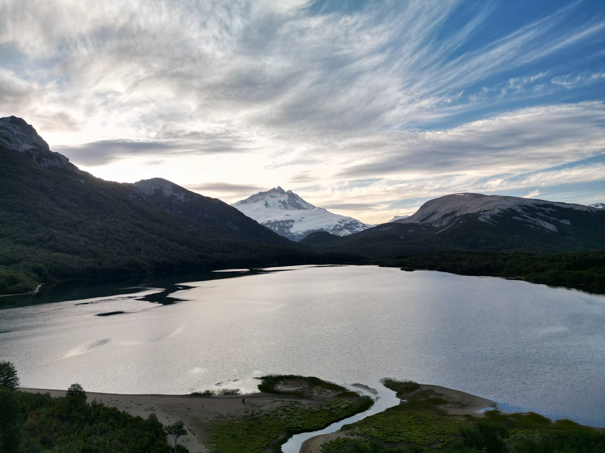

Desde el aire y desde el agua
Galería



03 · Cordillera · Arelauquen · Bariloche
Cascadas, miradores y bosques de lengas que no figuran en ningún mapa.
La experiencia
Lejos de los circuitos turísticos, la cordillera guarda senderos que solo conocen quienes crecieron acá. Te llevamos en vehículo hasta el inicio de cada ruta y caminamos a un ritmo pensado para disfrutar, no para llegar.
Cada salida termina en un lugar especial: una cascada oculta, un mirador sobre el lago o una playa desierta, con un picnic patagónico para cerrar el día y el dron sobrevolando el paisaje para tus fotos y videos.
Elegimos la ruta según el grupo y el clima: lagunas escondidas al pie de los cerros nevados, playas de piedra a las que solo se llega caminando, bosques de lengas centenarias. Sin multitudes, sin horarios ajenos, con la Patagonia entera para ustedes.
Desde el aire y desde el agua
Seguí explorando
Hablemos
Contanos en qué fechas venís y cuántos son. Te respondemos en el día por WhatsApp con disponibilidad y precios.